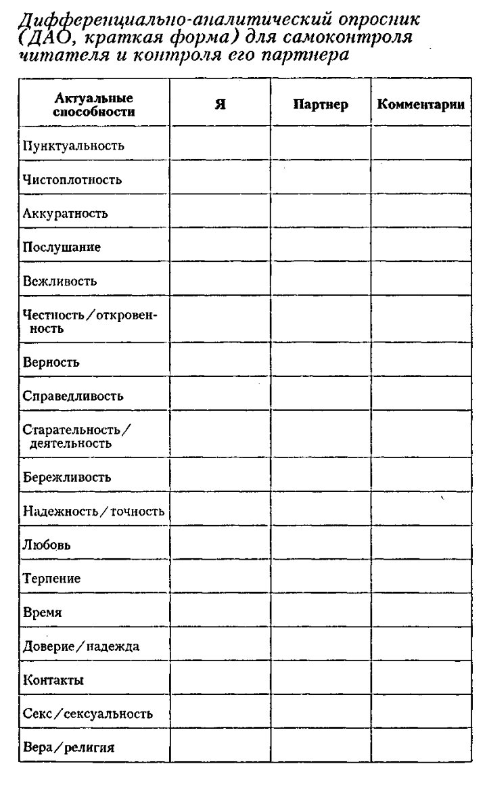
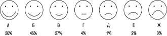

Инструкция к проведению ДАО звучит следующим образом: «Случаются ли у Вас конфликты в сфере пунктуальности (аккуратности и т.д.)? Кто из Вас — Вы или Ваш партнер — придает больше значения пунктуальности (аккуратности и т.д.)?» Возможны различные модификации инструкции в зависимости от конкретного случая.
Отмечаются отдельные поведенческие сферы таким образом, что ( +++ ) обозначает наивысшую субъективную оценку какой — либо категории, ( — ) обозначает низшую оценку («Вообще не придает этому никакого значения...»); ( + - ) свидетельствует об индифферентности по отношению к определенной поведенческой сфере; (++),( + ),(-) и ( - - ) отражают степени субъективного значения. Вторая графа воспроизводит самооценку пациентом его актуальных способностей. Третья графа отражает оценку пациентом качеств партнера; помимо этого, могут быть введены и дополнительные графы для значимых других. Последняя графа содержит спонтанные комментарии.

Насколько счастливым или несчастным вы чувствуете себя в целом? Отметьте один вариант ответа — тот, который точнее других отражает ваши ощущения:
(10) в высшей степени счастливым;
(9) очень счастливым;
(8) довольно-таки счастливым;
(7) серединка на половинку;
(6) иногда счастливым;
(5) нейтральным (ни счастливым, ни несчастным);
(4) слегка несчастным (чуть ниже нейтрального уровня);
(3) пожалуй, несчастным (жизнь немного тосклива);
(2) довольно-таки несчастным (испытываю легкую подавленность);
(1) глубоко несчастным (депрессия, подавленность);
(0) в высшей степени несчастным (острая депрессия сопровождает меня постоянно).
Какую часть времени (в среднем) вы проводите «на подъеме»? Как часто вы чувствуете себя несчастным? Насколько обычно для вас нейтральное состояние? Ответьте как можно точнее и так, чтобы в сумме ваши результаты составили 100 %.
В среднем я чувствую себя:
— счастливым — в течение... % всего своего времени;
— несчастным — в течение... % времени;
— ни счастливым, ни несчастным — в... %.
По результатам тестирования 3050 взрослых американцев средний уровень ответов на первый вопрос составил 6,92 балла. Согласно данным по второму вопросу, средний американец примерно половину своего времени (54,13 %) чувствует себя счастливым, 20,44 % времени — несчастным, а все остальное время (25,43 %) — чувствует себя нейтрально.
Оцените себя по семибальной шкале:
. В целом, я считаю себя:
Не очень счастливым человеком — 1 2 3 4 5 6 7 — Очень счастливым человеком
. По сравнению с большинством сверстников я считаю себя:
Менее счастливым — 1 2 3 4 5 6 7 — Более счастливым
. Некоторые люди очень счастливы по своей природе. Они радуются жизни независимо от того, что происходит вокруг. До какой степени это свойственно вам?
Совсем не свойственно — 1 2 3 4 5 6 7 — Типично для меня
. Некоторые люди не слишком счастливы. Пусть и не впадая в депрессию, приподнятым настроением они тоже не отличаются. До какой степени это свойственно вам?
Совсем не свойственно — 1 2 3 4 5 6 7 — Типично для меня
Чтобы подсчитать результат, сложите баллы своих ответов на первые три вопроса, прибавьте восемь и вычтите балл за четвертый вопрос. Средний итоговый результат взрослого американца — 4,8 балла. Две трети опрашиваемых набирают от 3,8 до 5,8 балла.
1. «В целом насколько счастливым или несчастным вы себя обычно чувствуете?» Предлагаются варианты ответа от «чрезвычайно счастливым» (в восторге, ощущаю радость, чувствую себя превосходно), за что начисляется 10 баллов, до «совершенно несчастным» (крайне подавленным, в абсолютном унынии), что дает 0 баллов.
2. «В среднем какую часть времени в процентах вы чувствуете себя счастливым (или несчастным, или в нейтральном состоянии)?»
Обе итоговые цифры суммируются. Среднее значение первого показателя составило 6,9 («умеренно счастливым»), а второго — 54%.
Согласно данной методике задается вопрос о «жизни в целом», однако формат ответа обращает этот метод в способ выявления эмоционального состояния человека.
Здесь изображены лица, выражающие различные чувства. Какое из них точнее всего отражает то, как вы ощущаете свою жизнь в целом?

Рис. Лица и чувства. Источник: Andrews & Withey, 1976
Насколько радостным или подавленным, счастливым или несчастным вы чувствовали себя сегодня?
10 Полное ликование. Восторженное, повышенно радостное настроение.
9 Очень весел и в чрезвычайно приподнятом настроении. Сильный восторг и жизнерадостность.
8 Весел и в приподнятом настроении.
7 Чувствую себя очень хорошо и бодро.
6 Чувствую себя довольно хорошо.
5 Ощущаю некоторое уныние. Чувствую себя неважно.
4 В подавленном настроении. Немного хандрю.
3 В депрессии, очень подавленном настроении. Хандра.
2 Чрезвычайно подавлен. Чувствую себя ужасно, тоскливо, просто кошмар.
1 Абсолютная депрессия и уныние. Чувствую себя в совершенно подавленном настроении. Все представляется в мрачном, черном цвете.
Источник: Wessman & Ricks, 1966.
Средние баллы по этой шкале у американских студентов составили 6,0 для мужчин и 6,14 для женщин, однако было замечено довольно много колебаний: каждый день плюс-минус полбалла.
Ниже приведены пять утверждений. Оцените, насколько каждое из них верно для вас, по следующей семибалльной шкале: — совершенно согласен;
— согласен; — отчасти согласен; — не могу сказать точно; — не совсем согласен; — не согласен; — абсолютно не согласен.
— Моя жизнь близка к идеальной почти во всех отношениях.
— Мои домашние условия превосходны.
— Я полностью удовлетворен жизнью.
— До сих пор я получал от жизни все, что мне было необходимо.
— Если бы я начал жизнь заново, ничего не стал бы менять.
Общий результат:
—35 баллов — в высшей степени доволен, результат намного выше среднего.
—29 баллов — очень доволен, результат выше среднего.
—24 баллов — более-менее доволен, средний результат для взрослого американца.
—19 баллов — слегка недоволен, результат чуть ниже среднего.
—14 баллов — недоволен, результат явно ниже среднего.
—9 баллов — очень недоволен, результат намного ниже среднего.
Этот тест уже выполнен десятками тысяч людей в разных странах. Средний итоговый результат у пожилых американцев — 28 баллов у мужчин и 26 у женщин, у американских студентов —
Одним из первых способов измерения удовлетворенности является вопрос, использованный Кэмпбеллом и соавторами.
Насколько вы сейчас удовлетворены своей жизнью в целом?
Абсолютная неудовлетворенность Средняя Абсолютная удовлетворенность 12 3 4 5 6 7
0,9% 2,1% 3,7% 11,3% 20,7% 39,6% 21,7%
Кроме того, я вношу свои впечатления в специальную рубрику под названием «Траектория жизни», где фиксирую, какие перемены случились в моей жизни за год, и выясняю общую динамику этих перемен за десять лет.
Нечто подобное я от всей души рекомендую делать и вам. Это помогает собраться, избавиться от иллюзий и определиться, в каком направлении действовать дальше. Как говорит Роберт Дэвис, «раз в год необходимо „взвешивать“ свою жизнь. Если вы обнаружили, что за год она набрала слишком мало „веса“ — меняйте образ жизни. Ключ к решению любой проблемы — в ваших руках».